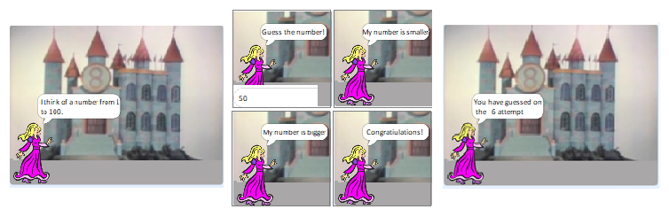
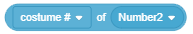
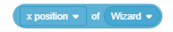

Varijable¶

Varijable su jedan od najvažnijih koncepata u programiranju. U ovoj lekciji predstavit ćemo različite vrste varijabli i pokazati kako se promjene njihovih vrijednosti mogu pratiti na pozornici. Kroz primjere projekata čije skripte imaju složenu strukturu, pokazat ćemo kako se mogu stvoriti konkurentne igre u kojima se igrači prate i kako se formiraju složeni izrazi za izračunavanje vrijednosti varijabli.
Što je varijabla?
Varijabla je područje računalne memorije. Možemo reći da je varijabla poput imenovanog okvira u kojem program privremeno pohranjuje podatke s kojima radi.

Slika varijable je nazvana X, a njena trenutna vrijednost je 15.
Varijable mogu pohraniti jednu vrijednost, kao što su broj ili slovo. Ovo su jednostavne varijable. Međutim, postoje i složene varijable koje pohranjuju više vrijednosti, na primjer niz, niz brojeva, niz riječi … U Scratchu se ovaj niz naziva popisom.
U prethodnim smo projektima koristili neimenovane vrijednosti. “Pozdrav Svijet” tekst i svi ostali koje stavimo u say i think blokovi su nizovi podataka.
Brojevi koje unosimo kao argumente u naredbama pokreta (idite, izravni, promijenite za) su također vrijednosti koje se mogu smjestiti u varijable.
Uvjet ponavljanja i uvjet grananja mogu imati dvije vrijednosti - istinsku i lažnu, tako da je ovo vrijednost, logička vrijednost.
Za složenije programe koje pišemo trebat ćemo imenovati neke vrijednosti, odnosno uvesti varijable.
Kako se stvaraju varijable?
U naredbenoj grupi Variables postoji samo moja varijabla na početku (Sl. A). Nova varijabla se stvara klikom na gumb Make a Variable.

Klikom na ovaj gumb otvara se dijaloški okvir za stvaranje nove varijable (B).
Varijabla može biti globalna ili lokalna, samo za skripte povezane s aktivnim objektom (likom ili fazom).
Globalne varijable mogu koristiti svi objekti projekta. Upisom imena varijable i klikom na gumb U redu u paleti blokova pojavljuje se reporter s imenom varijable pored potvrdnog okvira (C).
Blokovi koji predstavljaju varijable nazivaju se izvještači jer informiraju o trenutnoj vrijednosti varijable. Izvještači dolaze u dva oblika i mogu se postaviti samo u otvore istog oblika na zapovjednim blokovima.
Izvještači elipse sadrže brojeve ili nizove i mogu se postaviti u blokove koji imaju zaobljene bijele krugove.
Šesterokutni izvještači sadrže logičke podatke (istinite ili lažne) i mogu se postaviti u blokove s odgovarajućim otvorom.
Neki blokovi reportera također imaju potvrdni okvir. Ako kliknete potvrdni okvir, na pozornici se prikazuje monitor koji prikazuje trenutnu vrijednost varijable. Monitor može prikazati promjenjive vrijednosti u više različitih formata prikazanih na sljedećoj slici.

mali prikaz vrijednosti s nazivom varijable,
veliki prikaz vrijednosti bez pravog imena,
s klizačem koji omogućuje promjenu vrijednosti varijable.
Prijelaz iz jednog formata u drugi postiže se dvostrukim klikom na monitor. Format klizača može se koristiti samo za varijable koje kreiraju korisnici. Desnim klikom na klizaču prilagođavaju se minimalne i maksimalne vrijednosti.
 Prouči sljedeće primjere projekta¶
Prouči sljedeće primjere projekta¶
Primjer 1 – Projekt “Hunt”¶
Ovaj projekt je igra za dva igrača. Svaki od njih tipkama s tastature vodi svog mačka u lovu na miša koji se pojavljuje na slučajnom mjestu na pozornici. Igrač čija mačka prvi dodirne miša dobije bod. Kad jedna od mačaka dodirne miša ona nestaje i pojavljuje se drugdje. Prvi igrač vodi žutu mačku sa strelicama, a drugi igrač vodi sivu mačku s tipkama W, A, S, D.
Uvodimo kompleksne uvjete i logičke operacije.
Stvaranje pozadina i znakova
U ovom projektu imamo tri znaka - Cat1, Cat2 i Mouse i po jednu pozadinu. Napravili smo pozadinu malu izmjenu pozadine polja sijena iz knjižnice Scratch.

Lik Cat1 stvoren je iz lika Cat 2 iz biblioteke likova dodavanjem drugog kostima, a Cat2 lik je stvoren umnožavanjem Cat1 lika, što smo zatim promijenili u boji. Treći lik preuzet je s interneta i ima samo jedan kostim jer nema potrebe animirati njegov pokret u projektu.

Ponašanje lika Cat1
Prvo smo napisali skripte povezane s likom Cat1 i testirali ih, a zatim taj lik pomnožili i minimalno izmijenili pridružene skripte.

Na samom početku lik pokazuje mišem i dovoljno je da ga igrač vodi trkom ↑ da osvoji prvi bod. U daljnjem toku igre potrebno je da igrač usmjeri mačku prema mišu pomoću tipki ← i → koje lik rotiraju za 15 stupnjeva lijevo i desno. Također može koristiti utrku ↓ za vraćanje lika. Za Cat2 lik, skripte za trčanje su iste, samo su tipke izmijenjene. W vodi znak naprijed, S natrag, a A i D okreću znak lijevo i desno za 15 stupnjeva. I skripta za početak je gotovo ista, jedina je razlika što drugi znak ide u donji lijevi kut, odnosno šalje se u točku s koordinatama (-190, -130).
Ponašanje karaktera miša
Sljedeća slika prikazuje skriptu priključenu mišu. Na samom početku miš se postavlja na nasumično odabrano mjesto. Tada ulazi u beskrajno ponavljanje sljedećih radnji.
Čeka da jedna od mačaka dodirne miša
2. Miš se sakriva i pojavljuje se na drugom nasumično odabranom mjestu (within the loop, the mouse can appear both near the top and the bottom edge of the stage because now the interval for the value of the coordinate у is [-150, 150])

Formiranje složenog uvjeta
Uvjet u naredbi  je složen od dva uvjeta: Cat1 dodiruje miša ili Cat2 dodiruje miša.
je složen od dva uvjeta: Cat1 dodiruje miša ili Cat2 dodiruje miša.
Složeni uvjet se formira na sljedeći način.
iz grupe operacija biramo odgovarajuću operaciju – u našem slučaju logičku operaciju or
 .
.u prazne šesterokute postavljamo odgovarajuće uvjete

na kraju ovaj složeni uvjet postavljamo u blok “wait until”.

Nadogradnja projekta
Projekt ćemo nadograditi uvođenjem 2 varijable: player1 i player2 koji će pohraniti bodove igrača. Svaki dodir miša računat će prema igraču koji upravlja mačkom koji ga je dodirnuo kao točku. To će biti zabilježeno u skriptu miša. Bodovi oba igrača moći će se pratiti na zaslonu. Također ćemo uvesti tajmer koji prekida igru nakon što protekne određeno vrijeme. Pobjednik je igrač koji nakon isteka vremena ima više bodova.
Dakle, da biste pratili bodove igrača, treba provjeriti i varijable player1 i player2 i prikazati njihove monitore u prvom formatu.

Na početku skripte miša njihove početne vrijednosti trebaju biti postavljene na 0. Svaki put kada mačka dodirne, bodovi se trebaju povećavati. Dakle, sada skripta miša ima sljedeći izgled.
{kind=link}
Još uvijek imamo vremensko ograničenje za igru.
To ćemo učiniti postavljanjem vrijednosti varijable u skriptu koja se pokreće klikom na zelenu zastavu na željeno trajanje igre, na primjer 120 sekundi. Tada ćemo naredbu izvršiti 120 puta u ponavljajućoj naredbi  i smanjivati vrijednost varijable za 1.
Po izlazku iz ciklusa postavit ćemo naredbu
i smanjivati vrijednost varijable za 1.
Po izlazku iz ciklusa postavit ćemo naredbu  , i ovu ćemo skriptu pridružiti mišu.
, i ovu ćemo skriptu pridružiti mišu.
{kind=link}
Primjer 2 – Igra “Maze”¶
U projektu Maze je zadatak voditi lik miša kroz komplicirani labirint. Izlaz iz labirinta nalazi se na vrhu pozornice, tako da je uvjet da igra bude uspješno dovršena da y koordinata znaka bude veća od 180. Lik se usmjerava strelicama. Ako udari u bilo koji od zidova labirinta koji je crn, vraća se u početni položaj.
U našem remixu kretanje miša bit će preciznije kontrolirano. Jednim klikom utrke sa strelicom potrebno je samo 3 koraka (ne 10 kao u izvornom projektu). Udaranje u zid labirinta neće biti kažnjeno vraćanjem na početak, već samo odbijanjem sa zida poput projekta lansiranja labirinta (ide -2 koraka). Budući da miš vrlo često prilikom okretanja repa udara u zidove, odrezali smo mu rep (u uređivaču slika rep se najprije odabire alatom Reshape, a zatim briše klikom na tipku Del).
Izmijenjene skripte za miš prikazane su na sljedećoj slici.

Međutim, igra nije lakša, jer miš mora izbjegavati neprijatelje: 2 otrovne kugle (Ball1 i Ball2) i duh labirinta (Ghost).

Kuglice poput miša odbijaju se od zidova labirinta, dok duh može prolaziti kroz zidove.
Miš u početku ima 100 jedinica energije, koja se svakim potezom labirinta smanjuje za 5, a neprijateljev dodir još je opasniji. Sudar s loptom oduzima 10 jedinica energije, a sudar s duhom 50.
Igra se uspješno završava ako miš dosegne izlaz iz labirinta, a neuspješno ako mu u labirintu ponesta energije.
Ponašanje lopte
Lopta je skrivena na početku igre. Pojavljuje se nakon 1 do 5 sekundi od početka igre, Ball1 na (-120,0) i Ball2 na (165,55).
{kind=link}
Ponašanje duha
Duh je također skriven na početku igre. Pojavljuje se nakon 5 do 10 sekundi. Dok ne dotakne miša, klizi 5 sekundi do nasumično odabranog položaja u gornjoj polovici labirinta. Ako dodirne miša, oduzima 50 točaka energije, sakriva se, a nakon čekanja pojavljuje se 5 do 10 sekundi i ponavlja prethodno opisano kretanje.

Primjer 3 – Igra “Guess Number”¶
Kralj u osmom kraljevstvu imao je 8 kćeri. Kad je došlo vrijeme da se njegova djevojčica, najmlađa princeza, udala, pitao je kakvog će mladić poželjeti za svog supruga.
Princeza je odlučila da će za svog budućeg muža odabrati pametnog mladića, koji uspijeva riješiti sve zagonetke s kojima se susreće.
Prvo od njih bilo je pogađanje sa što je moguće manje pitanja koji je broj od 1 do 100 ona zamislila.
Kandidat bi odgovorio na pitanje: Moj broj je manji, Moj broj je veći ili Čestitke.
{kind=link}

Nadogradnja projekta Guess Number 2
Princeza je od učitelja matematike rekla da na pametna pitanja mora odgovarati u najviše 7 pokušaja, pa je princeza odlučila ući u uži izbor samo one kandidate koji od najviše 7 pokušaja pogode koji je broj zamislia.
Da bismo stvorili projekt u kojem se princeza osim provjere da li je utjecao na njen broj i koliko je pokušaja, napravit ćemo još jednu varijablu. Povećat ćemo njegovu vrijednost za 1 svaki put kad preuzmete odgovor korisnika.
Nakon napuštanja ciklusa pretraživanja, imat ćemo evidenciju koliko pitanja je korisnik uspio pogoditi imaginarni broj. Princeza, budući da kaže koliko je pokušaja pogođeno, također će reći da izgledate kao pametni igrač ako je broj pokušaja manji od 8, ili možete bolje ako je broj pokušaja 8 ili veći.

Slijedi primjer projekta koji se može koristiti kao obrazovni program za predškolce i učenike nižih razreda osnovne škole koji uče računati s računalnim igrama. Prikladan je jer malo stariji učenici kroz njegov dizajn i nadogradnje mogu dobiti ideje kako riješiti složenije matematičke probleme.
Primjer 4 – Projekt “Math Boy”¶
U čarobnoj zemlji žive mali čarobnjak - Math Boy, Number1, Number2 i Sign - znak aritmetičke operacije. Svaki broj ima 3 kostima u obliku brojeva raspoređenih u strogom redoslijedu: 1, 2, 3. Lik ima 2 kostima u obliku znakova aritmetičkih operacija: “*” i “+”.

Brojevi i lik vole igrati igru Primjeri: Svaki put kada kliknu na gumb Novi zadatak, nasumično, kao kad netko baci novčić, odaberu kostim. No, kako se brojevi i lik mijenjaju u primjerima, Math Boy ih prikuplja ili množi bez pogreške.
Lako možemo omogućiti Math Boyu dijeljenje i oduzimanje. Naime, svaki kostim ima ne samo ime i sliku, već i serijski broj.
Redni broj kostima je običan broj s kojim se mogu izvoditi matematičke operacije. Math Boy treba upotrijebiti broj narudžbe odabranog kostima u primjeru za svaki broj i lik.
Budući da smo već vidjeli da reporter sve znaju, Math Boy koristi potrebne izvještače iz Sensing grupe, blok ako ... onda iz Control grupe, operatora logičke jednakosti te matematičke operatore množenja i zbrajanja iz grupe Operators.
U prvoj verziji projekta korisnik klikne na gumb Novi zadatak i mali čarobnjak to riješi.
Stvaranje likova
Za lik matematičara odabrali smo čarobnjaka Wizard Boy, a za Number1 lik 1-Glow iz biblioteke likova. Zatim smo na kartici Kostimi uveli još dva kostima za Broj1, najprije znamenku 2-Glow, a zatim znamenku 3-Sjaj. Napravili smo Number2 duplikat broja1. Oba kostima za lik znaka crtaju se u uređivaču slika (krug množenja i + znak za dopunu). Na gumbu-3 stvorili smo gumb Novi zadatak koji bi na prvom kostimu trebao glasiti “Novi zadatak”.

Scenarij i skripte za likove
Na ekranu s lijeve strane stoji dječak matematičara, a desno jedan pored drugog su Broj1, Znak i Broj2. Gumb Novi zadatak nalazi se pri dnu zaslona. Program započinje klikom na gumb Novi zadatak koji zatim šalje poruku “zadatak”. Svi ostali likovi odgovaraju na poruku “zadatak”: Math Boy zamišljajući “Hmmm …” i brojeve i karaktere pojavljuju se u nasumično odabranom kostimu. Klik na dječaka prikazuje mjehurić stripa s rezultatom zadate operacije. Znakovi Number1, Number2 i Sign imaju samo po jednu skriptu - reakcija na događaj kada primim zadatak s jednom naredbom - prebacite kostim da odaberem slučajne brojeve od 1 do 3 (1 do 2 za lik). lik gumba Nova zadaća reagira samo kad se na njega klikne. Zatim mijenja kostim (da zna da je kliknut), šalje poruku, čeka pola sekunde i vraća se svom izvornom izgledu. Skripte povezane s brojevima, likom i gumbom prikazane su na sljedećoj slici.

Skripte koje opisuju ponašanje dječaka matematičara kada primi poruku “zadatka” i kad se na nju klikne prikazane su na sljedećoj slici.

Zaustavimo se na drugom scenariju dječaka matematičara. Kad klikne na njega, zamisli rezultat, a evo kako do njega dolazi. Kao što smo rekli, Sign se može pojaviti u dva kostima. Prvi kostim - Kostim s brojem 1 odgovara množenju, pa ako je slučajno generiran broj 1, matematičar bi trebao množiti brojeve. Ako za lik ne nastane broj 1, tada matematičar treba zbrojiti brojeve. Slično tome, redni brojevi kostima za Number1 i Number2 odgovaraju brojevima s kojima matematičar treba izvesti navedenu operaciju. U tekstu koji se pojavljuje u opisima stripa koristili smo operaciju spajanja. Operacija jedna je od operacija koja se može izvesti na string podacima. Jedan od dva lika čini jedinstven, koji sadrži sve likove prvog, na koji su svi likovi drugog. Na primjer, korištenje blokova lika na lijevo dati će slijedeći rezultat. Ako je odgovor na pitanje “Kako se zoveš?” “Nikola”, lik mačke će odgovoriti “Pozdrav Nikola”.

Kako se funkcionalni blokovi ubacuju u funkcionalne blokove?
U našem scenariju povezujemo matematičara s naredbom pridruživanja misli operacije u polju argumenta. U prvo polje operacije veze upisali smo tekst “Odgovor je”, a u drugo polje operacija * (množenje) i + (dodavanje). Tada smo u prvo polje aritmetičke operacije upisali broj kostima broja Number1, a u drugo broj kostima broj Number2. Je li to objašnjenje jasno?
Ako niste sigurni kako to učiniti, pogledajte detaljnije objašnjenje
U lekciji Nizanje koraka napravili smo klasifikaciju blokova koji se koriste na Scratchu i naznačili da je tzv. Funkcijski blokovi umetnuti su u tzv Komandne blokove. Kako pravimo složenije projekte, tako koristimo i sve složenije funkcijske blokove koji su formirani iz mnogih drugih funkcionalnih blokova, kao u primjeru koji upravo opisujemo. Dakle, ovom prilikom ćemo vam pokazati korak po korak kako formirati složenu misaonu naredbu. Pri tome idemo unatrag, od kraja do početka. Trebali bismo dobiti: Trebali bismo dobiti:
We should get
Kako dobijemo i ?
а) Uzmemo blok  iz grupe Sensing.
1.2. S popisa likova koji dobivamo klikom na trokut pored drugog polja odaberite Broj1 (ili Broj2)
1.3. S popisa varijabli koje su povezane s ovim likom koje dobivamo kad kliknemo na trokut s varijablom pozicijom x odaberite “kostim #”

Kako dobijemo

а) Uzmemo blok  izgrupe blokova Operators
izgrupe blokova Operators
Postavimo prvi argument koji smo dobili po opus 1 u prvo polje

Postavimo drugi argument kji smo dobili po opisu u drugo polje
Kako dobijemo
а) Uzmemo blok iz grupe blokova Operators
b)Upišemo tekst “Answer is” u prvo polje 
Postavimo argument koji smo formirali po opisu 2 u drugo polje
Konačno , ovako formiran argument postavimo u poilje bloka
Prva nadogradnja
Ako u projektu želimo raditi s brojevima od 1 do 9, tada moramo dodati kostime s rednim brojevima 4 do 9 (redoslijedom znamenki od 4-Glow do 9-Glow) brojevima Switch1 do Number 9 i njihovim skriptama u kostimu naredbenog prekidača za odabir slučajnih postavite “1 do 9” umjesto “1 do 3”.
Druga nadogradnja
Projekt možemo nadograditi tako da Math Boy korisniku odgovori na pitanje, a zatim nam kaže je li odgovor točan ili ne. U ovoj verziji projekta nije potrebno upravljati događajem kada se klikne ovaj lik. Treba dodati i objašnjenje kako se program koristi. To možemo regulirati uvođenjem drugog gumba na kojem piše Naputak. Kada se klikne ovaj gumb, šalje se upute s uputama na koje pozadina i dječak reagiraju. Pozadina se mijenja u Backdrop2, koja prikazuje priručnik s uputama programa, a Math Boy smanjuje se na 30% svoje veličine kako ne bi prikrivao upute. Sljedeća slika prikazuje reakcije na različita događanja u projektu “Math Boy3”.

Treća nadogradnja
Ako se dodatkom i množenjem želimo pozabaviti operacijama oduzimanja i dijeljenja, projekt postaje značajno složeniji. Da biste nadogradili, trebate dodati još dva kostima znaku Sign - za oduzimanje i : za dijeljenje. Skripta koja opisuje ponašanje matematičara kad se klikne na njega također bi trebala biti izmijenjena.

Podrazumijeva se da korisnik zna što su negativni brojevi. Prilikom dijeljenja osigurajte da je rezultat cijeli broj i izbjegavajte dijeljenje s nulom. Da ne bi došlo do problema s dijeljenjem, ako se tijekom generiranja operacije ustanovi da je riječ o podjeli, izjavit ćemo poruku o podjeli, a u svim ostalim slučajevima raditi ćemo kao što je riješeno u prethodnim verzijama projekta.

Kada se klikne gumb Nova zadaća, ona šalje poruku “zadatak” na koju Math Boy i Sign odgovaraju. Math Boy misli “Hmmm …”, a Sign generira slučajni broj od 1 do 4 i prikazuje se u odgovarajućem kostimu (1 - množenje, 2 - zbrajanje, 3 - oduzimanje, 4 - podjela).
Za sve operacije osim dijeljenja, Sign šalje poruku “jednostavno”. U slučaju podjele deklarira poruku „podijeli“ koja aktivira skriptu za izračunavanje kvocijenta dva broja i završava slanjem poruke „dividing“. Broj1 i Broj2 odgovaraju na poruke poslane od strane znaka.
Brojke Number1 i Number2 odgovaraju na poruku „jednostavno“ kao u prethodnim verzijama projekta, odnosno prikazuju se u jednom od nasumično odabranih kostima 1 do 9. Međutim, ako se radi o razdijeljenosti, način postavljanja zadatka prilično je različit, to ide od rezultata do brojevi koji ga obrazuju. Konkretno, u slučajnoj podjeli generiraju se dva slučajna broja iz intervala [1,9]. Prvi od njih dodjeljuje se kvocijentnoj varijabli, a drugi varijabli divisior. Rezultat njihova množenja je dividend varijabla.
Vrijednost varijable dividend dodjeljuje se Number1, a vrijednost varijable djelitelju Number2. Tako matematičar dijeljenjem djelitelja od djelitelja sigurno dobiva cjelobrojnu vrijednost kvocijenta od intervala [1,9].

Pomoću ove metode generiranja zadataka od rezultata do operanda koristit ćemo se u drugim projektima. Na taj način možemo osigurati da je korisnik dobio zadatak koji može riješiti, na primjer, da kada oduzme ne dobije negativan rezultat ili je rezultat množenja do 50, te da faktori mogu biti veći brojevi i slično.
Kao novi problem u takvom rješenju problema pojavljuje se da će djelitelj vjerojatno biti dvoznamenkasti broj, a može završiti znamenkom 0 koja nije bila uključena u kostime Number1 u prethodnim projektima. Ovaj problem rješavamo uvođenjem drugog znaka, produkta znaka Number1 kojeg smo nazvali (znamenka) Deset znamenki i dodavanjem znaka Number1 u nulu kao 10. kostimom. Nepotrebno je da znak desetaka znamenki nije vidljiv, pojavljuje se samo kad znak pošalje podijeljenu poruku, a prethodno izračunati djelitelj je dvoznamenkasti broj (što je utvrđeno pomoću varijable broja znamenke). Zatim se lijevo od broja 1 prikazuje desetak znamenki koja prima vrijednost broja jedinice djelitelja.
Koristimo operaciju za vođenje dijeljenja znamenki  , koji odvaja znak s navedenim rednim brojem od niza.
, koji odvaja znak s navedenim rednim brojem od niza.
Kako Scratch vrši automatsku pretvorbu podataka iz numeričkih u nizu i obrnuto, znamenke višecifrenih brojeva jednostavno su razdvojene ovom operacijom i nije potrebno objašnjavati što je cjelobrojna podjela ili bilo koja operacija da bi se ostatak vratio u cjelobrojnu podjelu. Sljedeće slike prikazuju skripte povezane s brojevima Number1, Number2, i Signs.

 Odgovori na sljedeća pitanja¶
Odgovori na sljedeća pitanja¶
Pitanje 1¶

Kolika je vrijednost varijable a po izvršenju naredbi:
{kind=link}
Pitanje 3¶

Kolika je vrijenost varijable y po izvršenju naredbi:
Pitanje 4¶

Kolika je vrijednost varijable y po izvršenju naredbi:
Pitanje 5¶
- с je pomoćna varijabla.
- а je pomoćna varijabla, b i C razmjenjuju vrijednosti.
- Ako je b=0, podjela nije definirana.
Q-83: Koji od sljedećih nizova naredbi razmjenjuje vrijednost varijabli a i b?

Pitanje 6¶
- 6 and 6
- Netočno
- 3 and 3
- Uvjet grananja je ispunjen; prema tome, početna vrijednost varijable se povećava.
- 6 and 3
- Točno
- 3 and 6
- Netočno
Q-84: Što izgovara lik po izvršenju niza a) a to po izvršenju niza b) naredbi?

Pitanje 7¶

- a=5
- To je netočno 5<5, uvjet grananja nije ispunjen.
- a=0
- Točno 0<5.
- a=10
- To je netočno 10<5, uvjet grananja nije ispunjen.
- a=4
- Točno 4<5.
Q-85: Za koje vrijednosti varijable a će varijabla b dobiti vrijednost 1? (Izaberi sve točne odgovore)
Pitanje 8¶
- a=5 b=10
- Točno 5<10.
- a=0 b=-1
- Od 0>-1, uvjet grananja nije ispunjen.
- a=10 b=5
- Od 10>5, uvjet grananja nije ispunjen.
- a=4 b=4
- Od 4=4, uvjet grananja nije ispunjen.
Q-86: Za koje vrijednosti varijabli a i b varijabla min dobiti vrijednost varijabli a?

Pitanje 9¶

Koja će vrijednost imati varijabla a poslije izvršenja neredbe uvjetnog prelaska ako su prethodno vrijednosti varijabli a i b bile: a=4 i b=2?:
Pitanje 10¶
- yes
- Za а=0 prva naredba daje vrijednost 5 varijabli b, a druga naredba vrijednost 2.
- no
- Točno
Q-87: Obavljaju li ove dve naredbe uvjetnog grananja uvijek isti posao?

Pitanje 11¶

- b=5
- Točno
- b=2
- Uvjet grananja je ispunjen; povećava se početna vrijednost varijable.
- b=6
- Netočno
- b=3
- Netočno
Q-88: Koju će vrijednost imati varijabla b poslije izvršenja naredbi uvjetnog prelaska ako je prethodno vrijednost varijable b bila b=2?
- b=5
- Netočno
- b=2
- Netočno
- b=6
- Uvjet grananja nije ispunjen; prema tome, početna vrijednost varijable se ne mijenja.
- b=3
- Točno
Q-89: Koju će vrijednost imati varijabla b poslije izvršenja naredbe uvjetnog prelaska ako je prethodno vrijednost varijable b bila b=3?
Pitanje 12¶

-
Q-90: Upari početne vrijednosti varijabli s vrijednostima po izvršenju naredbe uvjetnog prelaska.
Pokušaj ponovo
- a=2 b=1
- a=2 b=5
- a=2 b=-2
- a=-5 b=-2
- a=-2 b=1
- a=-2 b=5
- a=-2 b=-1
- a=-5 b=-1
 Pokušaj!¶
Pokušaj!¶
Vježba 1¶
Write a series of commands that:
razmjenjuje vrijednost 2 varijable;
određuje koji je broj veći od dva broja koja se unose s ulaza;
određuje minimalno 3 broja koji se unose s ulaza.
Vježba 2¶
Provjeri u Scratchu da li sljedeći nizovi nardbi razmjenjuju vrijednost varijabli x i y bez obzira koje su njihove početne vrijednosti.

What happens if х=0 or у=0?
Vježba 3¶
Napiši program ukome se ponavlja sljedeći niz koraka:
lik traži od korisnika da unese prirodan broj i zatim izgovara
koji broj je prethodnik
koji broj je sljedbenik,
koji broj je dvostruko veći
koji broj je dvostruko manji od zadanog broja.
Ponavljanje prekinuti kada korisnik unese broj 0.
Vježba 4¶
Napišite program koji ponavlja sljedeći niz koraka:
lik traži da korisnik upiše dva cjelobrojna broja x i y različita od nule, a zatim izgovori
zbroj brojeva “х” i “у” je “х+у”,
razlika između brojeva “x” i “y” je “x-y”,
proizvod brojeva “x” i “y” je “x * y” i
kvocijent brojeva “x” i “y” je “x / y”.
pri čemu bi umjesto varijabli navedenih pod navodnicima trebalo staviti njihove vrijednosti.
Prestanite ponavljati kada korisnik upiše broj 0 bilo kao vrijednost x ili kao vrijednost y.
Vježba 5¶
Daje se izraz 16: 8: 4: 2. Koja je njegova vrijednost? Zapiši to na Scratchu i provjeri.
Pisanjem dva para zagrada na različite načine dobivaju se izrazi s različitim vrijednostima. Odredite sve moguće vrijednosti koje se mogu dobiti na ovaj način.
Za svaku metodu zapišite izraz na Scratchu i provjerite jeste li dobro izračunali njegovu vrijednost.
Pomoć. Uglate zagrade daju sljedeće izraze: ((16: 8): 4): 2
(16: (8: 4)): 2 (16: 8): (4: 2) 16: ((8: 4): 2) 16: (8: (4: 2))
 Ispravi greške!¶
Ispravi greške!¶
Greška 1¶
- Question
Pitanje: Učenik je želio promijeniti ponašanje mačke kada je dodirnula miša u projektu Hunt, tako da je mačka, dok je dodirnula miša, krenula u krugu (360 puta napravila 1 korak i okrenula jedan korak). Na mačku je bio pričvršćen skriptama prikazanim na sljedećoj slici, ali prilikom testiranja projekta vidio je da se mačka ne okreće nakon što je miš dodirnuo. Što je pogreška?
{kind=link}
Answer:
Uvjet se provjerava samo neposredno po kliku na zelenu zastavicu. Potrebno je da se provijeri stalno, znači uvjetna naredba treba postaviti u beskončan ciklus.
Greška 2¶
- Question
Učenik je želio napraviti jednostavniju verziju projekta labirint bez varijabli, pa se u slučaju dodira zida labirinta (crni) miš vratio u početni položaj (23, -158). Međutim, miš je udario u zidove labirinta i kad učenik to nije očekivao. Što je pogreška?

Odgovor:
Lik se okreće prije nego što se usmjeri kamo treba, pa korača u smjeru zadanom prethodno izvršenom naredbom usmjerenja.
Greška 3¶
- Question
I ovaj je program trebao miša vratiti na početak kad god bi dotaknuo zidove labirinta. Međutim, nekada se događalo, ponekad nije. Što je pogreška?

- showtitle
Show the Answer
- hidetitle
Hide the Answer
Odgovor:
Blok ako … onda koji provjerava dodiruje li lik labirint nalazi se unutar bloka koji provjerava je li lijeva strelica pritisnuta i treba li biti iza nje. Ovako se provjerava uvjet dodira samo ako znak ide lijevo.
 Što smo naučili¶
Što smo naučili¶
U ovoj lekciji smo naučili kako se varijable stvaraju i koriste. Također smo predstavili blokove iz grupe Operators i pokazali kako se grade složeni funkcionalni blokovi. Projekti kojima smo se bavili imaju složenu strukturu - sastavljeni su kombiniranjem osnovnih elemenata programske logike. Pronalaženje logičkih pogrešaka u takvim projektima nije lako. Zbog toga ćemo u sljedećim poglavljima pokazati načine na koje se razvoj i testiranje projekata može olakšati dijeljenjem velikih skripti na postupke - logičke dijelove koji svaki obavljaju jednu funkciju
Novi pojmovi: varijabla – jednostavna, složena, lokalna, globalna.
Nove naredbe:  -
-  ,
,  ,
,  ,
,  ;
;  -
-  ,
,  ;
;  - , , ,
- , , ,
 Napravi neki od sljedećih projekta¶
Napravi neki od sljedećih projekta¶
Project 1 - “Kalkulator”¶
Započnite novi projekt koji ćete nazvati Kalkulator, u kojem ćete kreirati kalkulator za 4 osnovne računske radnje - zbrajanje, oduzimanje, množenje i dijeljenje. Za ovu vježbu trebat će vam sljedeći likovi: gumb +, tipka -, gumb * i gumb /.
Pored toga, trebat će vam i sljedeće varijable u aplikaciji: ulazne vrijednosti x i y i Rezultat.
Formirajte projekt na sljedeći način:
Za pozadinu nacrtajte pravokutnik u gornjem lijevom kutu na kojem piše “KALKULATOR”
Napravite sve potrebne varijable i složite ih na kalkulator
Umetnite znakove za 4 gumba za obavljanje izračuna i rasporedite ih na kalkulatoru.
Za svaki od gumba stvorite sljedeću skriptu: kad se klikne miš, izvodi se odgovarajuća operacija izračuna.
Ispitajte rezultat.
Kalkulator vjerojatno radi dobro, ali nije očito koja je operacija zadnji put izvedena.
Stoga promijenite kalkulator tako da zadnja pritisnuta tipka promijeni boju u crvenu (što će biti znak da je rezultat koji vidimo rezultat te operacije).
Upute: Za svaki gumb morate napraviti drugi kostim. Učinite gumb u novom kostimu crvenim. Kada se klikne gumb, skripta bi trebala poslati poruku “Nova radnja”, a zatim promijeniti kostim u crveni. Uz to, svaki gumb mora imati jednu skriptu koja sluša poruke i kad primi poruku “Nova operacija” kako bi promijenila svoj kostim u originalni kostim.
Projekt 2 – Program na osnovu bloka dijagrama¶
Napravite program u Scratchu koji odgovara sljedećem algoritmu. Napomena. Uvjet “3 | a” je provjeriti je li broj a djeljiv sa 3.
{kind=link}
Odredite rezultat izvršenja tog programa s a = 157; a = 342; a = 529.
Koliko će brojeva biti postignuto izvršavanjem određenog programa?
Da li broj rezultata ovisi o ulaznoj vrijednosti troznamenkastog broja a?
Uredite program tako da uvijek dobijete dvoznamenkasti broj.
Project 3 - “Utrka automobile”¶
Započnite novi projekt nazvat ćete “Car Racing”, u kojem ćete napraviti igru za dva igrača. Na pozornici bi trebala biti tri znaka: 2 automobila i vrata koja glase “Cilj”. Svaki se automobil može kretati naprijed-natrag i okretati se u smjeru kazaljke na satu i obrnuto.
Upravljački gumbi za prvi automobil su:
Strelica prema gore - Automobil ide ravno naprijed
Strelica prema gore - Automobil ide ravno naprijed
Strelica lijevo - Automatski se okreće u smjeru suprotnom od kazaljke na satu
Strelica desno - Automatski se okreće u smjeru kazaljke na satu
Upravljački ključevi za drugi automobil su:
W Automobil ide ravno naprijed
S Kad se Auto vrati ravno natrag
А A Automobil se okreće u smjeru suprotnom od kazaljke na satu
D Automobil se okreće u smjeru kazaljke na satu
Nakon što stvorite skripte za prvi automobil, klonirajte ga i izvršite potrebne promjene u nazivima gumba i izgledu samog automobila. Cilj se pojavljuju na pozornici na nasumično odabranom mjestu. Automobili s upravljačkim tipkama voze se do cilja. Tko prvi dodirne cilj, dobiva 1 bod. Kada automobil dotakne cilj, cilj nestaje s pozornice i pojavljuje se na novom nasumično odabranom mjestu (uzimajući u obzir dimenzije pozornice i koordinate donje lijeve i gornje desne točke). Automobili se sada voze prema novom odredištu. Tko god prvi dotakne cilj dobiva 1 bod. Cilj opet nestaje i pojavljuje se na novom mjestu…. I tako u krug. Automobil koji prvi postigne 30 bodova pobjednik je. Utrka se zaustavlja i na “Stage” se ispisuje poruka “Winner is Player 1” ili “Winner is Player 2”. Da biste mogli pratiti bodove svakog automobila, potrebno je uvesti varijable Player1 i Player2. Za praćenje koordinata ciljaunesite varijable kx i ky.